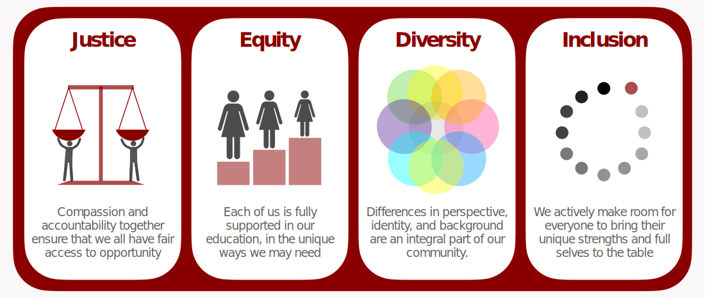

What is JEDI?
JEDI stands for Justice, Equity, Diversity and Inclusion—four important components of a truly inclusive community. These terms have many definitions, but we define them below in ways that highlight their role in this course.

What is this course?
This is a required course for first year CSD PhD students, occurring annually in the first six weeks of Spring semester. The goal of this course is to prepare PhD students to engage in the CS community, even as our community evolves to put more emphasis on J, E, D, and I. This evolution, articulated by the quote below, is reflected in the increasing expectations of students to engage meaningfully with JEDI concepts on department committees, in student groups, and on job applications.
“There is a movement occurring…widely within our computing community, toward making tangible progress through intentional actions and interventions for advancing and valuing diversity, equity, and inclusion.” [ACM 2021].
A hallmark of this course is that it was created by PhD students, and it remains PhD-student-run. Designed specifically with the needs of PhD students in mind, this course is short, flexible, literature-based, framed through the lens of academic computer science, and geared toward helping students build community. It requires three hours per week in and out of class, but provides many opportunities for deeper exploration with instructor support.
Logistics and Resources (Spring 2023)
Instructors
Gabriele Oliaro (he/him) goliaro@andrew (student instructor)
Victor Akinwande (he/him) vakinwan@andrew (student instructor)
Zico Kolter (he/him) zkolter@andrew (faculty instructor)
For a primer on pronouns and why we include them, see mypronouns.org.
Course Time and Location
Class is held Tuesdays, 2:00 - 3:20pm ET in GHC 4303.
Office hours are by appointment (email instructors).
Main Course Resources
- Syllabus: Contains all course policies and an overview of weekly course topics.
- Discussion Guide: The main resource for supporting inclusive in-class discussions. It contains the class community guidelines, a list of inclusive discussion strategies, instructions for synthesis group activities, and options for resolving issues.
- In-Class Schedules: Full description of each week’s in-class schedule. Includes all resources students need to participate.
- Assigned Groups and Lenses: In this class, students are assigned to lenses and synthesis groups. Synthesis groups are the same each week; assigned lenses are randomized. For details on this, see the “Pedagogy” page of this site.
- Class Google Drive: Contains most course materials, plus folders containing collaborative resources for each synthesis group. We treat these documents as living documents, and we welcome students to use the comment feature to make suggestions and ask questions in the margins of any document.
- Make-up Assignment: Instructions for the make-up assignment, to be done when a student misses over 50% of a class.
- Anonymous Feedback Portal: Anonymously leave feedback and suggestions about the course here.
Additional Resources and References
- Course Library.: Spreadsheet where students (and any other CMU grad student) can check out books from the 15-996 library.
- Course Project: Information on the (optional) course project. This is a great opportunity for students!
- Glossary: Definitions and explanations of terminology students may encounter throughout this course.
- Supportive resources at CMU (Reference): An instructor-compiled document listing several resources available to students seeking support and community.
- Ways to get involved at CMU (Reference): An instructor-compiled document describing ongoing initiatives toward strengthening our community with which students can get involved, plus avenues to start your own such initiative.
Weekly schedule and assignments
This table contains the weekly class schedule, due dates, links to homeworks, and links to lecture slides. In a typical week, students must complete two out-of-class assignments: pre-class activities (due the day before class), and post-class reflections (due the day after class). All assignments are submitted via Canvas. Note that the instructions for the post-class reflection are consistent week-to-week, so they will be linked only in week 1. All deadlines in this class occur at 11:59pm ET.
| Week 1: Introduction, identity, and intersectionality | ||
| mon 1/22: pre-course surveys due tue 1/23: pre-class activity 1 due |
tues 1/23: class meets [lecture slides] | wed 1/24: post-class reflection due |
| Week 2: Creating identity safety in research settings | ||
| mon 1/29: pre-class activity 2 due | tues 1/30: class meets [lecture slides] | wed 1/31: post-class reflection due |
| Week 3: Frameworks for understanding diverse experiences in CS, higher-ed, and the US context | ||
| mon 2/5: pre-class activity 3 due | tues 2/6: class meets [lecture slides] | wed 2/7: post-class reflection due |
| Week 4: Well-being in the PhD program | ||
| mon 2/12: pre-class activity 4 due | tues 2/13: class meets [lecture slides] | wed 2/14: post-class reflection due |
| Week 5: Intent versus impact | ||
| mon 2/19: pre-class activity 5 due | tues 2/20: class meets [lecture slides] | wed 2/21: post-class reflection due |
| Week 6: Allyship and promoting positive change | ||
| mon 2/26: pre-class activity 6 due | tues 2/27: class meets [lecture slides] | wed 2/27: course evaluation due |
Note: If there is a link in this table that takes you back to the top of the “home” page, the document is not available.
 This work is licensed under a Creative Commons Attribution-NonCommercial 4.0 International License.
This work is licensed under a Creative Commons Attribution-NonCommercial 4.0 International License.
Website contributors: Alex Wang, Bailey Flanigan, Paul Gölz